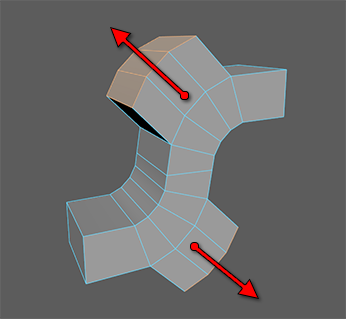
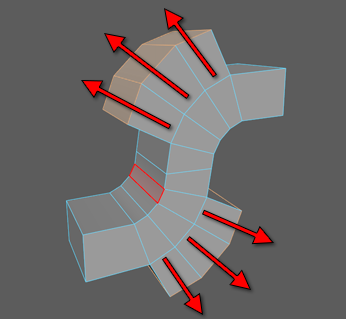
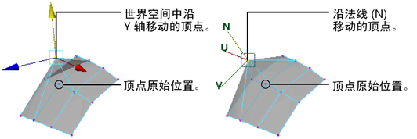

沿其法线方向移动多边形上的一个或多个组件，是编辑多边形曲面的一种方便而易于管理的方法。
使用“移动工具”(Move Tool)沿法线移动组件
使用“移动工具”(Move Tool)来移动组件，这是一种推荐次数最多的最快速简便的方法。
使用“移动工具”(Move Tool)沿其法线移动组件
- 选择所需的组件（顶点、边、面）。
- 选择“移动”(Move)工具。
- 执行下列操作之一：
- 按住 Ctrl 键并用鼠标中键向左拖动可沿其法线拉入组件。
- 按住 Ctrl 键并用鼠标中键向右拖动可沿其法线推出组件。
此外，您还可以使用“移动工具”(Move Tool)，通过利用组件(Component)
轴方向(Axis Orientation)沿其平均化法线移动连接组件组。

有关详细信息，请参见独立变换多个组件。
使用“移动法线工具”(Move Normal Tool)沿其法线移动组件
此外，您还可以使用“移动法线工具”(Move Normal Tool)沿其法线移动顶点。
使用“移动法线工具”(Move Normal Tool)沿其法线移动顶点
- 选择场景视图中的顶点。
- 在“工具箱”(Toolbox)中，双击“移动工具”(Move tool)以显示其选项面板。
- 在选项面板中，将“移动”(Move)设定为“法线”(Normal)，并启用“更新(UVN)三轴架”(Update (UVN)Triad)。
- 拖动“UVN”（“移动法线工具”(Move Normal Tool)）操纵器以移动选定顶点。

注： 无论选择如何移动组件，请避免调整具有历史的对象（通过使用
“移动”(Move)、
“旋转”(Rotate)或
“缩放”(Scale)来移动 CV 或移动多边形组件）。如果调整具有历史的对象，则该调整将应用于特定的组件 ID。后续更改对象历史时，将导致组件 ID 更改，从而改变调整的效果。
例如，如果旋转曲线来创建曲面，然后调整曲面中编号为 3 的 CV，则所做调整将始终应用于编号为 3 的 CV。如果稍后更改旋转节点属性，以减少曲面中的分段数，则已调整的 CV 现在将具有新编号，且调整不再应用于该 CV。调整将应用于现在编号为 3 的 CV，该 CV 可能位于曲面中的不同位置。